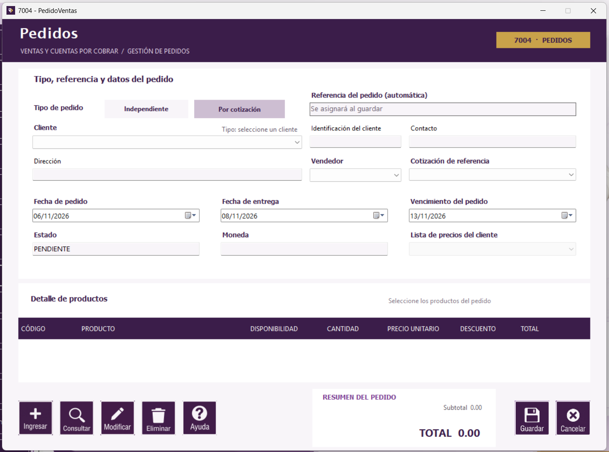

Pedidos | Seguimiento de pedidos

Formulario de pedidos.
Registrar un pedido
- Elija Independiente o Por cotización y seleccione el cliente.
- Si es independiente, seleccione su lista de precios, el vendedor y los productos. La cantidad debe ser entera. La lista determina el precio.
- Si es por cotización, seleccione una cotización vigente del cliente y revise el detalle cargado.
- Revise las fechas y el total; pulse Guardar. La referencia se asigna automáticamente.
Botones de este formulario
| Botón | Acción |
|---|
| Inicia un pedido o agrega el producto seleccionado al detalle. |
| Abre seguimiento para buscar pedidos. |
| Permite editar datos y estado si el pedido está PENDIENTE o CONFIRMADO. |
| Quita un producto del detalle o cambia el estado de un pedido a ANULADO. No borra el pedido de la base. |
| Abre esta página. También puede presionar F1. |
| Valida y guarda el pedido. |
| Cancela la captura actual. |
Manual de usuario · Pedidos · Aplicación 7004